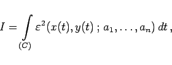
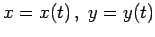
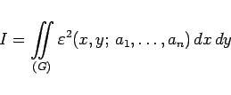
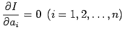
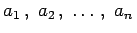

Inhalt Index DeskTop Bronstein

 Numerische Mathematik Genäherte Integration von partiellen Differentialgleichungen Ansatzverfahren
Numerische Mathematik Genäherte Integration von partiellen Differentialgleichungen Ansatzverfahren


Je nachdem, ob die Ansatzfunktion (19.139) die Differentialgleichung oder die Randbedingungen erfüllt, verlangt man, daß
|  | (19.142a) |
wobei die Randkurve C durch die Parameterdarstellung  beschrieben wird, oder
|  | (19.142b) |
minimal wird. Aus den dafür notwendigen Bedingungen  erhält man n Bestimmungsgleichungen für die Parameter .